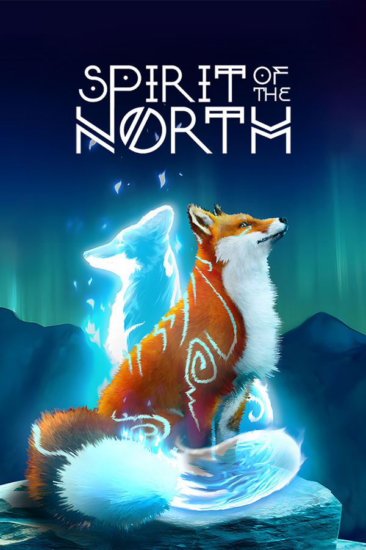

Spirit of the North
Spirit of the North
Details
|  | |
| Playtime | Not Played |
| Last Activity | Never |
| Added | 5/06/2025 3:25:05 |
| Modified | 6/06/2025 21:46:48 |
| Completion Status | Not Played |
| Library | Epic |
| Source | Epic |
| Platform | PC (Windows) |
| Release Date | |
| Community Score | |
| Critic Score | |
| User Score | |
| Genre | Adventure Puzzle |
| Developer | |
| Publisher | |
| Feature | |
| Links | My Nintendo Store |
| Tag | 3D 3D Platformer Adventure Atmospheric Beautiful Casual Cute Experience Exploration Fantasy Fox Great Soundtrack Indie Open World Platformer Puzzle Relaxing Singleplayer Third Person Walking Simulator |
Description
Spirit of the North is a single-player 3rd-person adventure game inspired by the breathtaking and mysterious landscapes of Iceland. The story takes root from various pieces of Nordic folklore.
The game is unique in that it purposefully has no dialogue or narrative. Players must breathe in their surroundings to solve various puzzles and speculate the meaning of a lost ancient civilization.
Play as an ordinary red fox whose story becomes entwined with the guardian of the Northern Lights, a female spirit fox. As you journey over the mountains and under red-stained skies, you’ll discover more about your companion and a land left in ruin.
The game is unique in that it purposefully has no dialogue or narrative. Players must breathe in their surroundings to solve various puzzles and speculate the meaning of a lost ancient civilization.
Play as an ordinary red fox whose story becomes entwined with the guardian of the Northern Lights, a female spirit fox. As you journey over the mountains and under red-stained skies, you’ll discover more about your companion and a land left in ruin.